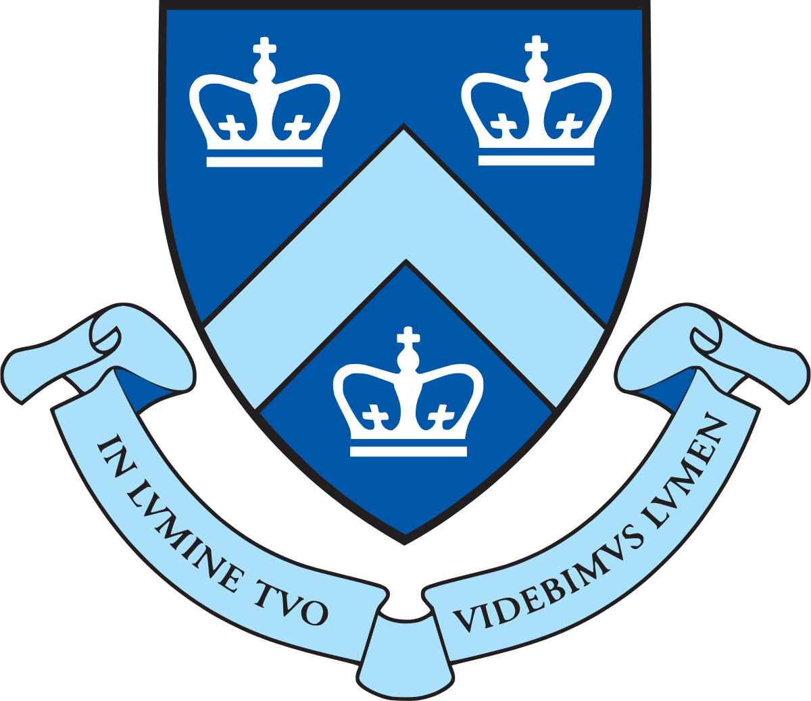
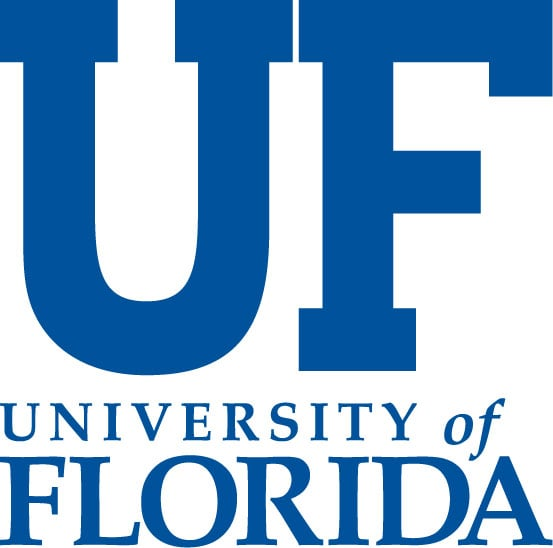

About Me
Hi human or agent, nice to meet you!
I'm Yun-Yun (Alice) Tsai (蔡昀芸), a sixth year (final-year) Ph.D. in the Department of Computer Science at Columbia University, advised by Professor Junfeng Yang.
My research focuses on machine learning robustness in vision + language domain, test-time adaptation, LLM safety, and auto-evaluation for agentic systems. My goal is to design trustworthy and reliable foundation models and AI agent frameworks.
I received Bachelor's and Master's degrees in computer science, both from National Tsing Hua University (NTHU), Taiwan. Previously, I was advised by Professor Tsung-Yi Ho and Dr. Pin-Yu Chen from IBM Research Trusted AI group.
Misc:
- I am looking for strong motivated students to work on broad AI security and agent auto-evaluation problems. Master and undergraduate students are welcoming. If you know how to build fundamental AI algos models, we should talk. Just shoot me a human-written email to yt2781@columbia.edu.
- I am currently on the job market! I am looking for faculty positions in AI/ML track for next Fall, 2027, and also open to industry research scientist roles.
News
- [2025 May] Started research scientist intern at Meta SuperIntellience Labs @ Bellevue, WA.
- [2024 May] Started research scientist intern at Meta GenAI Team @ New York, NY.
- [2024 April] I passed my Ph.D. candidacy exam on April 24 2024. Thank to my committee members Prof. Richard Zemel, Prof. Carl Vondrick, and Prof. Junfeng Yang. (Slides)
- [2024 Feb] One main conf. paper + two workshop papers are accepted by CVPR 2024. See you in Seattle!
- [2023 Sep] One paper is accepted by NeurIPS 2023 @ New Orleans.
- [2023 May] Started applied scientist internship at Amazon Astro Team @ Bellevue Washington.
- [2023 Mar] Two papers are accepted by CVPR 2023 @ Vancouver.
What I Enjoy
Research
I work on Security in Artificial Intelligence: making machine learning algorithms and computer systems more trustworthy, secure, and robust — from adversarial robustness and test-time defenses to detecting AI-generated media.
To my papersMusic
I love music and have played the piano and viola for over 20 years. I was the 1st chair viola of Tsing Hua Symphony Orchestra for 4 years, and am a violist of the Columbia University Orchestra, performing at Lincoln Center's Alice Tully Hall.
Others
Snapshots beyond papers: internship experiences at Microsoft, visiting research at the University of Florida, conference travels, invited talks, volunteering, and team leadership.
To my photosProfessional Experience
§Research & Working Experience
-
Meta SuperIntelligence Labs
Bellevue WA, USAResearch Scientist Intern · May. 2025 - Aug. 2025
Mentor: Sinong Wang, Yuning Mao, Shiqi Wang -
Meta GenAI Team
New York NY, USAResearch Scientist Intern · May. 2024 - Aug. 2024
Mentor: Laurens van der Maaten and Chuan Guo -
Amazon Astro Team
Bellevue Washington, USAApplied Scientist Intern · Jun. 2023 - Sept. 2023
Mentor: Fu-Chen Chen and Prof. Sun Min -

Graduate Research Assistant · Sept. 2021 - present
Advisor: Prof. Junfeng Yang -
Graduate Research Assistant · Sept. 2018 – Jun. 2021
Advisors: Prof. Tsung-Yi Ho and Dr. Pin-Yu Chen -

Visiting Scholar · Mar. 2019 – Aug. 2019
Advisor: Prof. Yier Jin -
Cloud and AI Engineering Group, Microsoft
Research Intern · Jul. 2017 – Jun. 2018
Mentors: Mrs. Cheryl Hsu and Mrs. Anne Yang
§ Honors, Awards, and Grants
- Nov. 2023
- Awarded the 2023 NeurIPS's scholar award
- June 2023
- Awarded the 2023 CVPR's scholar award
- Sep. 2021
- PhD Dean’s Fellowship, Fu Foundation School of Engineering and Applied Sciences, Columbia University.
- Aug.12.2020
- Best Presenter, Blackhat Award Forum in CyberSec, Taiwan, 2020.
§ Service
- Paper Review
- ICCV '25, CVPR '23 '24 '25, NeurIPS '23, IEEE Access, KDD '21, ICLR '21, AAAI '21
- Teaching Assistant
- Computer Vision II, Engineering Software-as-a-Service, Fundamental of Formal Language, Very-Large-Scale Integration
§ Invited Speech
- Dec.7.2025
- I was invited to give a talk at AI Governance course, taught by Professor Lake Dai, at Carnegie Mellon University Silicon Valley.
- Dec.7.2024
- I was invited to give a talk at Young Women Star session at Taiwanese Association of Aritificial Intelligence (TAAI) 2024.
- Dec.5.2020
- I was invited to give a talk about my ICML'20 paper at Taiwanese Association of Aritificial Intelligence (TAAI) 2020.
- Aug.12.2020
- I was invited to give a talk about "CloudLeak: DNN Model Extractions from Commercial MLaaS Platforms" at CyberSec 2020 Blackhat Awarded Forum, Taipei.
Publications
§Conference and Workshop Papers
-
WebUIProof: Benchmarking WebUI Code Generators with UI-Agent Execution Harness
-
RAFP: Identifying LLM Lineages via Rare-Region Fingerprints
-
ARQ: Agentic CodeQL Query Refinement for C/C++ Vulnerability Detection
-
Reasoning under Vision: Understanding Visual-Spatial Cognition in Vision-Language Models for CAPTCHA
-
REVEAL: Robust Evolution of Vision-Language Models for Explainable AI-Video Detection
-
GDA: Generalized Diffusion for Robust Test-time Adaptation
-
Convolutional Visual Prompt for Robust Visual Perception
-
Towards Compositional Adversarial Robustness: Generalizing Adversarial Training to Composite Semantic Perturbations
-
Test-time Defense against Adversarial Attacks: Detection and Reconstruction of Adversarial Examples via Masked Autoencoder
-
CARBEN: Composite Adversarial Robustness Benchmark
-
Generalizing Adversarial Training to Composite Semantic Perturbations
-
Voice2Series: Reprogramming Acoustic Models for Time Series Classification
-
Transfer Learning without Knowing, Reprogramming Black-box Machine Learning Model with Scarce Data and Limited Resources
-
CloudLeak: Large-Scale Deep Learning Models Stealing Through Adversarial Examples
-
Adversarial Machine Learning for Social Good: Reprogramming Black-box Machine Learning Model
-
Vehicle Sequence Reordering with Cooperative Adaptive Cruise Control